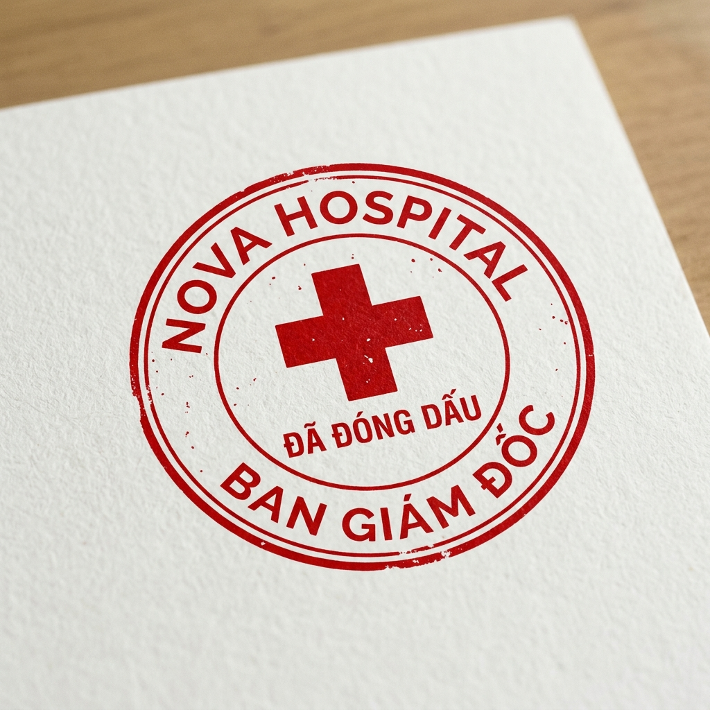

PHÁT TRIỂN CHIỀU CAO TỐI ƯU
Chủ đề: Chăm sóc sức khỏe bản thân | Tiết 3: Lan tỏa sức khỏe
"Làm thế nào để lan tỏa thói quen phát triển chiều cao tối ưu đến cộng đồng một cách thuyết phục nhất?"
KHỞI ĐỘNG
GAME: AI LÀ CHUYÊN GIA THẬT?
Chuẩn Bị Tranh Biện
Hình thức
Hoạt động Cá nhân phản xạ
Thẻ bình chọn
1 Thẻ Đúng (✅) + 1 Thẻ Sai (❌)
Ghi nhớ
Nhật ký chuyên gia
Luật Chơi Tranh Biện
1. Đọc Phát Biểu
Đọc to phát biểu về sức khỏe xuất hiện trên màn hình.
2. Phân Định
Giơ thẻ ✅ (Chuyên gia thật - Đúng) hoặc ❌ (Chuyên gia giả - Sai).
3. Nhận Điểm
Xem lý giải khoa học và nhận điểm chuyên gia y khoa.
Trắc Nghiệm Phân Định Chuyên Gia
"Uống sữa giúp xương dài ra, còn nước ngọt có ga không ảnh hưởng gì cả."
Lý giải: Sai. Nước ngọt có ga chứa axit phốt phoric, làm tăng đào thải canxi qua thận, cản trở sự cứng cáp cốt hóa của xương.
Thông Điệp Chuyên Gia Y Khoa
NHẬN THỨC CHUẨN XÁC:
Chuyên gia truyền thông sức khỏe thực thụ là người biết phân lọc, kiểm chứng thông tin dựa trên cơ sở khoa học y sinh chuẩn xác.
Nhiệm vụ tiếp theo của chúng ta là tiến hành diễn tập báo cáo thực địa chiến dịch cộng đồng, nghiệm thu chất lượng bài nói để đạt hiệu quả cao nhất.
KHOA HỌC DẪN ĐƯỜNG
Mọi khẩu hiệu, slogan đều cần dựa trên y học lâm sàng thực tế!
DIỄN TẬP TUYÊN TRUYỀN
DIỄN TẬP TUYÊN TRUYỀN VÀ KHỞI ĐỘNG CHIẾN DỊCH
Chuẩn Bị Diễn Tập
Hình thức
Nhóm y khoa 4 người (giữ nguyên nhóm)
Học liệu
Poster truyền thông đã được phê duyệt ở Tiết 2
Thời gian
15 phút diễn tập & kiểm tra checklist
Chuẩn Bị Diễn Tập Tuyên Truyền
TIẾN TRÌNH DIỄN TẬP NHÓM:
- 1. Thống nhất nội dung thuyết trình: Xem lại các luận điểm trên poster: Vấn đề (thói quen sai) ➔ Hậu quả y khoa ➔ Giải pháp (định lượng canxi, thể thao, ngủ sớm).
- 2. Phân vai rõ ràng: Cử ra người nói chính, người cầm poster minh họa, và người phụ trách trả lời chất vấn từ các nhóm khác.
- 3. Diễn tập trôi chảy: Luyện phát âm to rõ, tự tin, và căn chỉnh thời lượng nói tối đa 2 phút.
- 4. Tích checklist sẵn sàng: Kiểm tra chéo xem nhóm đã đạt đủ 4 tiêu chí: Nội dung đúng, Có vấn đề - hậu quả - giải pháp, Dễ hiểu và Đúng thời lượng.
Diễn Tập Tuyên Truyền Nhóm
NHIỆM VỤ NHÓM:
Thống nhất nội dung
Cả nhóm thảo luận chốt thông tin poster, số liệu y học cốt lõi.
Phân vai
Chia người thuyết trình, người hỗ trợ cầm poster, người phản hồi chất vấn.
Luyện tập
Diễn tập nói to, rõ ràng, căn thời gian trình bày trôi chảy.
CHECKLIST:
Kỹ Năng Thuyết Trình Y Khoa Thuyết Phục
Làm thế nào để mở đầu bài tuyên truyền lôi cuốn người nghe?
Click để xem gợi ý chuyên gia...
➔ Nên bắt đầu bằng một thực trạng đáng báo động hoặc câu hỏi gây tò mò (Ví dụ: "Các bạn có biết có đến hơn 60% bạn bè xung quanh chúng ta đang kìm hãm chiều cao của mình vì thói quen đi ngủ muộn không?").
Làm thế nào để giải thích cơ chế y khoa dễ hiểu với mọi người?
Click để xem gợi ý chuyên gia...
➔ Sử dụng các hình ảnh so sánh trực quan (Ví dụ: đĩa sụn tiếp hợp như các viên gạch sinh trưởng cần canxi làm xi măng cốt thép, hormone GH như ánh mặt trời ban đêm đánh thức sự phát triển) thay vì đọc các khái niệm sinh học khô khan.
Làm thế nào để kêu gọi hành động hiệu quả, thay đổi hành vi?
Click để xem gợi ý chuyên gia...
➔ Chỉ ra phác đồ hành động có định lượng rõ ràng: uống đủ 500ml sữa, ngủ sớm trước 22h, tập thể dục kéo giãn > 45 phút, kèm lời tuyên thệ danh dự hoặc thử thách cùng thực hiện.
Lệnh Xuất Quân Tuyên Truyền Thực Địa
CHỨNG CHỈ SẴN SÀNG:
Sau khi các nhóm hoàn thành diễn tập và tích đủ 4 tiêu chí checklist, GV sẽ đóng con dấu chứng nhận "SẴN SÀNG" của Nova Academy lên sản phẩm.
Nhóm chuyên gia chính thức được lệnh xuất quân ra tuyên truyền thực địa tại workshop trường học. Hãy phát huy tối đa tinh thần chuyên nghiệp y khoa!

SẴN SÀNG CHIẾN DỊCH
Nova Hospital & Academy bảo chứng tinh thần chuyên nghiệp y khoa.
Bản Lĩnh Chuyên Gia Tuyên Truyền
CHUẨN BỊ LÀ CHÌA KHÓA:
Kỹ năng diễn tập kỹ lưỡng giúp các chuyên gia tự tin, phối hợp ăn ý nhịp nhàng và tránh các lỗi sai sót khoa học khi phát ngôn trước công chúng.
DIỄN TẬP HOÀN THÀNH
Các nhóm chuyên gia đã sẵn sàng ra thực địa báo cáo chiến dịch sức khỏe.
BÁO CÁO CHIẾN DỊCH
CHIẾN DỊCH SỨC KHỎE NOVASTARS & VINH DANH
Chuẩn Bị Báo Cáo Chiến Dịch
Hình thức
Nhóm đại diện thuyết trình + Phản hồi chéo
Học liệu báo cáo
Poster y tế đã được phê duyệt
Phiếu phản hồi
Mẫu phiếu phản hồi chéo nhóm 👍 / ❓ / 💡
Thuyết Trình & Phản Hồi Chéo
QUY TRÌNH THUYẾT TRÌNH & ĐÁNH GIÁ CHÉO:
- 1. Đại diện thuyết trình: Các nhóm lần lượt dán poster lên bảng lớp, cử đại diện thuyết trình báo cáo trong 2 phút.
- 2. Nghiêm túc lắng nghe: Các nhóm chuyên gia còn lại lắng nghe và điền phiếu phản hồi chéo.
- 3. Công thức phản hồi chéo bắt buộc:
👍 1 điểm hay: Khen ngợi một điểm xuất sắc của poster/bài thuyết trình.
❓ 1 câu hỏi: Đặt câu hỏi chất vấn chuyên môn khoa học.
💡 1 góp ý: Đề xuất một giải pháp để nâng cao chất lượng poster.
Lễ Trao Giải Cúp Vàng Danh Giá
Giá Trị Của Việc Trao Đổi Chuyên Môn
ĐÁNH GIÁ CHÉO XÂY DỰNG:
Trao đổi phản hồi theo công thức 👍 / ❓ / 💡 giúp các chuyên gia nhìn thấy thế mạnh, đồng thời nhận ra các thiếu sót khoa học y tế để tiếp tục tối ưu hóa chiến dịch.
Sự vinh danh cúp vàng chính là ghi nhận cho nỗ lực nghiên cứu và sáng tạo không ngừng nghỉ của cả tập thể.
NGHIỆM THU CHIẾN DỊCH
100% Poster đạt chuẩn y khoa được cấp phép lưu hành trong nhà trường.
NHẬT KÝ TUYÊN THỆ
NHẬT KÝ CHUYÊN GIA & THỬ THÁCH BÁC SĨ NHÍ
Chuẩn Bị Sổ Tay Cá Nhân
Hình thức
Hoạt động Cá nhân độc lập
Sổ tay chuyên gia
Sổ tay mini tự làm từ Tiết 1
Dụng cụ viết
Bút mực, bút bi, thước kẻ
Thử Thách Bác Sĩ Nhí Hành Động
THỬ THÁCH HÀNH ĐỘNG 21 NGÀY:
- Trang 6 (21 ngày vàng): Tự lập bảng theo dõi thói quen 21 ngày trong sổ tay.
- Trang 7 (Ghi nhận): Đánh dấu tích xanh mỗi ngày khi uống đủ 500ml sữa, ngủ sớm trước 22h, tập thể thao nhảy dây > 45 phút.
- Lời thề bác sĩ: Viết ngắn gọn lời cam kết danh dự của chuyên gia sức khỏe ở trang cuối.
KỶ LUẬT LÀ SỨC MẠNH:
Cần tối thiểu 21 ngày liên tục để bộ não hình thành một thói quen mới có lợi. Hãy quyết tâm thực hiện thử thách để tự cải thiện chiều cao tối ưu cho chính mình!
Lời Thề Danh Dự Bác Sĩ Nhí
LỜI TUYÊN THỆ DANH DỰ
"Tôi cam kết bảo vệ sức khỏe bản thân. Tôi thề đi ngủ trước 22h00, uống đủ 500ml sữa tươi mỗi ngày, vận động thể chất kéo giãn xương khớp tối thiểu 45 phút, và cùng lan tỏa lối sống lành mạnh đến cả cộng đồng!"
XÁC NHẬN CHỮ KÝ
Cấp Chứng Nhận Tốt Nghiệp
HOÀN THÀNH LỘ TRÌNH 3 TIẾT HỌC
Chúc mừng các bạn Bác sĩ nhí đã hoàn thành xuất sắc lộ trình học tập thực hành lâm sàng và cộng đồng tại Nova Hospital!
Đăng Ký Họ & Tên Học Viên:
NOVA HOSPITAL
HỌC VIỆN BÁC SĨ NHÍ
CHỨNG NHẬN TỐT NGHIỆP
BÁC SĨ DINH DƯỠNG NHÍ XUẤT SẮC
Khóa học thực hành y khoa lâm sàng và cộng đồng:
"PHÁT TRIỂN CHIỀU CAO TỐI ƯU TUỔI DẬY THÌ"
Trân trọng trao tặng cho:
[ Họ và tên học sinh ]
Đã xuất sắc vượt qua các ca khám lâm sàng tại bệnh viện giả định, lập phác đồ dinh dưỡng - giấc ngủ - thể thao tối ưu và hoàn thành chiến dịch tuyên truyền bảo vệ sức khỏe cộng đồng.
Đại diện
Nova Hospital
Ban điều hành
Novastars Academy